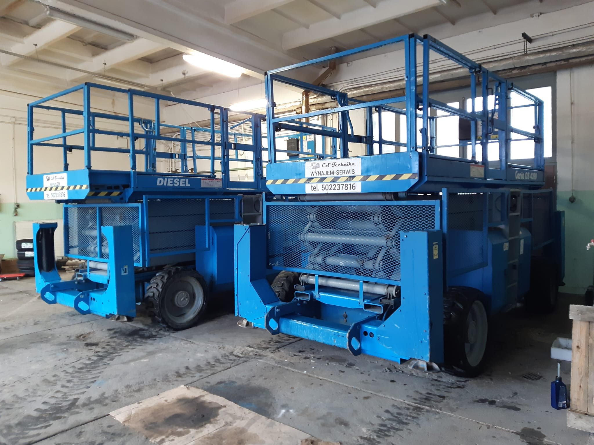

Obsługujemy Twoje miasto
Wynajem maszyn budowlanych Dąbrowa Tarnowska
Potrzebujesz wynająć ładowarkę lub podnośnik na inwestycję w Dąbrowie Tarnowskiej? Jesteśmy do Twojej dyspozycji. Dostarczamy sprzęt sprawnie i terminowo.

Szybki transport maszyn do Dąbrowy Tarnowskiej
Zapewniamy dostęp do profesjonalnego sprzętu budowlanego. Wynajmując maszyny od CS Technika, masz pewność, że praca zostanie wykonana szybciej i bezpieczniej.
- Dowóz własnymi zestawami transportowymi.
- Przejrzysta umowa i jasny cennik.
- Maszyny pod nadzorem UDT z aktualnymi badaniami.